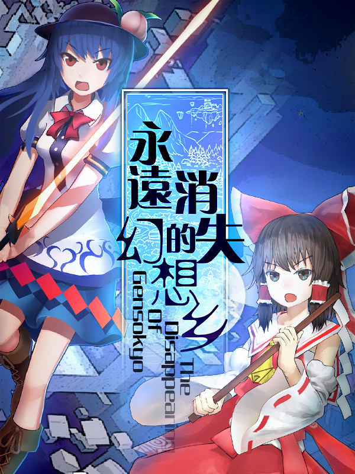

永遠消失的幻想鄉 ～ The Disappearing of Gensokyo
永遠消失的幻想鄉 ～ The Disappearing of Gensokyo
Details
|  | |
| Spielzeit | Nicht gespielt |
| Letzte Aktivität | 12.12.2021 2:39:03 |
| Hinzugefügt | 12.12.2021 3:03:22 |
| Modifiziert | 10.11.2022 13:59:01 |
| Fertigstellungsstatus | Not Played |
| Bibliothek | Steam |
| Quelle | Steam |
| Plattform | PC (Windows) |
| Veröffentlichungsdatum | 11.01.2018 |
| Community Bewertungen | 82 |
| Kritiker Punkte | |
| Benutzerwertung | |
| Genre | Action Adventure Indie 🐎 RPG |
| Entwickler | MyACG Studio |
| Verleger | MyACG Studio |
| Eigenschaft | Achievements Cloud Saves Controller Support Single Player Steam Karten |
| Links | Communityhub Diskussionen Guides Neuigkeiten Shopseite PCGamingWiki Errungenschaften |
| Tag | |
Beschreibung

"The Disappearing of Gensokyo" is a Touhou Project doujin game made with our love and heart, we hope you enjoy it.
A game from MyACG Studio, a Chinese doujin game fan circle.
- We have re-imagined Touhou as an ARPG, creating this "Danmaku-Shooting-ARPG".
- Fight against different kinds of enemies, and defeat the powerful bosses of Gensokyo!
- We hope this game will be a good experience for those who are both new and knowledgeable of Gensokyo - the world of Touhou Project!
================================================================
Dodge, shoot!
A brand new "Danmaku-Shooting-ARPG" game.
We have kept the Danmaku features of Touhou, and re-imagined it as an ARPG!
We know you want more playable characters~!
Control characters from Gensokyo with interesting and unique abilities.
Use their special abilities to defeat a variety of enemies and bosses.
A variety of enemies
An "Incident" happens again as usual. Strange people are appearing in Gensokyo!
Who are they? Where did they come from? Why did they come here?
But no matter, you have to defeat them!
Exciting Boss Combat
We spent a lot of time polishing the boss fights.
Fight against famous Touhou characters, find their weaknesses, and save Gensokyo!
Explore Gensokyo
You will explore Heaven, the Hakurei Shrine, Misty Lake, the Scarlet Devil Mansion, and more famous places in Gensokyo!
Explore the world of Gensokyo and find out what's going on!
Solve the Incident!
It's an Incident! But this time, "Incident resolver -- Hakurei Reimu" doesn't appear!
Where is she? Gensokyo is in danger!
================================================================
Touhou Project Creator: ZUN
Developer: MyACG Studio
This game complies with the guidelines for releasing Touhou doujin games on Steam.
Enjoy!